A VERTIC é uma holding institucional e ecossistema integrado estruturado sob o modelo de
Full Stack Advisor. Atuamos como o Sistema Operacional definitivo para o empresário de alto valor
(HNWIs), unificando três eixos críticos que tradicionalmente operam isolados:
Eficiência Operacional: Soluções avançadas em tecnologia e escala prática (Tech &
Growth).
Eficiência Estratégica: Otimização de processos executivos, cultura e governança
corporativa (Advisory).
Eficiência Patrimonial: Blindagem tributária avançada e alocação orientada por dados
quantitativos (Wealth & Law).
02 // ESTRUTURA VISUAL
A Estética Finance Noir & Depth UI
A identidade de marca foi concebida para afastar-se do visual corporativo comum e aproximar-se de softwares
técnicos de alta performance. O conceito visual se apoia em planos de fundo pretos profundos, layouts
divididos por bordas finas e micro-interações simétricas.
No website, aplicamos o conceito dinâmico "The Shift": quando a navegação sai das frentes
técnicas/operacionais e entra na vertical sucessória de Wealth, a interface muda de forma coordenada e fluida
para um tema claro minimalista com acentos em dourado champanhe, simulando o status de prestígio,
transparência e blindagem alcançados pelo cliente.
03 // PALETA CROMÁTICA
Cores Oficiais
A paleta cromática é dividida entre os tons do tema escuro de engenharia e os tons de prestígio do tema
sucessório de riqueza.
Obsidian Black
#04070c
Slate Gray
#71717a
Neon Cyan
#06b6d4
Zinc Light
#e4e4e7
Obsidian Light
#f8fafc
Champagne Gold
#B89454
Cores das Subsidiárias (Grupo)
Tons cromáticos de suporte que definem e diferenciam a identidade de cada vertical especializada do
ecossistema.
Coral Red (Fotografia)
#f43f5e
Trust Blue (Consultoria)
#3b82f6
Creative Purple (Marketing)
#a855f7
Robotics Orange (Automações)
#f97316
04 // TIPOGRAFIA E ARRANJOS
Tipografia Complementar
A força institucional e a precisão matemática são representadas pela união de duas fontes estruturadas:
VERTIC SYSTEM
INTER // PESOS: BOLD, EXTRABOLD // APLICAÇÃO: TÍTULOS E MARCA PRINCIPAL
CORE_ENGINE_V1.0
JETBRAINS MONO // PESOS: REGULAR // APLICAÇÃO: SUBTÍTULOS, TAGS, NÚMEROS E TECH DATA
05 // ARQUIVOS VETORIAIS E UPSCALADOS
Variantes do Logotipo Principal
Estes são os logotipos oficiais. Cada variante está disponível nas cores padrão para fundos escuros (Dark) e
adaptada para fundos claros (Light). Todas as imagens PNG contêm fundo transparente e resolução UHD (600 DPI).
Stacked Version DARK
Logo empilhado padrão da holding. Ideal para cartões de visita e caixas de
assinatura escuros.
Abaixo estão as variantes gráficas complexas baseadas no **Triple V-Node** (três linhas em V convergentes no
vértice inferior com o nó circular luminoso).

Preloader Symbol DARK
Ícone de carregamento padrão da holding (Branco / Ciano / Branco).
A VERTIC se ramifica em empresas de atuação especializada no mercado, herdando a estrutura do logotipo
institucional e utilizando cores exclusivas como assinatura para cada vertical de negócio. Disponíveis em
versões para fundos escuros (Dark) e claros (Light).
Vertic Fotografia DARK
Fotografia corporativa. Nó Coral Vermelho (#f43f5e), representando o frame de
gravação.
Para preservar o valor da marca VERTIC, atente-se às seguintes restrições de uso:
Não distorça ou achate o logotipo: A proporção de escala de largura e altura deve ser
mantida travada (aspect-ratio).
Não mude a proporção do V-Node: O alinhamento e a distância entre o ícone e o início da
tipografia deve ser mantida fiel às variantes especificadas.
Não utilize fundos de baixo contraste: Garanta sempre contraste absoluto. Ao utilizar
variantes brancas/claras, dê preferência a backgrounds escuros e limpos, ou utilize as variantes escuras
para layouts claros.
{kind=link}
{kind=link}
{kind=link}
{kind=link}
{kind=link}
{kind=link}
{kind=link}
{kind=link}
{kind=link}
{kind=link}
{kind=link}
{kind=link}
{kind=link}
{kind=link}
{kind=link}
{kind=link}
{kind=link}
{kind=link}
{kind=link}
{kind=link}
{kind=link}
{kind=link}
{kind=link}
{kind=link}
{kind=link}
{kind=link}
{kind=link}
{kind=link}
{kind=link}
{kind=link}
{kind=link}
{kind=link}
{kind=link}
{kind=link}
{kind=link}
{kind=link}
{kind=link}
{kind=link}
{kind=link}
{kind=link}
{kind=link}
{kind=link}
{kind=link}
{kind=link}
{kind=link}
{kind=link}
{kind=link}
{kind=link}
{kind=link}
{kind=link}
{kind=link}
{kind=link}
{kind=link}
{kind=link}